01 · Problem
One person does the ordering, then everyone forgets to pay.
In CBD offices, one person usually tapaus for the team. Orders get lost in the chat, and they front the money and chase repayments.
Goal: make collecting orders and getting paid back take less effort than doing it in a group chat.
02 · Framing
Two people, two very different jobs.
I split the problem by who does what. The organiser does almost all the work; the colleague just wants to order and get back to their desk. If either has to work harder than in a group chat, nobody will use it.
Organiser
“I’ll go buy, everyone send me your orders.”
- Collects orders from scattered messages
- Fronts the money
- Works out who owes what
- Chases people to pay
Colleague
“Chicken rice, less rice. How much ah?”
- Wants to order in seconds
- Doesn’t want another app account
- Forgets to pay back
How might we
make collecting orders and getting paid back less effort than a group chat, for both the organiser and everyone else?
Assumptions I need to test
- UntestedOrganisers are the ones who would download the app; colleagues will only ever open a link.
- UntestedChasing money is a bigger pain than collecting orders.
- UntestedEveryone pays by PayNow, so an in-app wallet isn’t needed.
- UntestedSplitting delivery fees evenly feels fair to people.
03 · User flow
Mapping the flow before the screens.
I mapped both people side by side. The dashed lines are the hand-offs, the order link and the payment request. That’s where things break, so they got the most attention.
Organiser
- 1Open app
- 2Start group order: pick stall, set cutoff
- 3Share link to team chat
- 4See orders come in live
- 5Lock order and place it
- 6Split the bill
- 7Track who has paid
Colleague
- 8Tap link in chat
- 9Add my items
- 10Confirm before cutoff
- 11Get payment request
- 12Pay organiser by PayNow
- 13Marked as paid
From the flow I picked six screens. Steps that didn’t need their own screen, like confirming before the cutoff, became states.
04 · Wireframes
Six screens, in grey first.
Greyscale first, to judge structure without colour. I also checked the maths: each share is food plus an even split of the $4 delivery fee, and the tracker adds up.
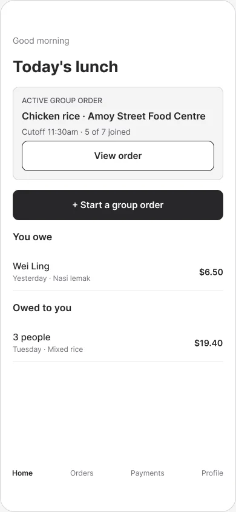
1 · Home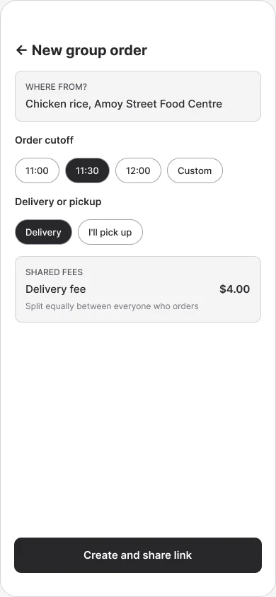
2 · Start group order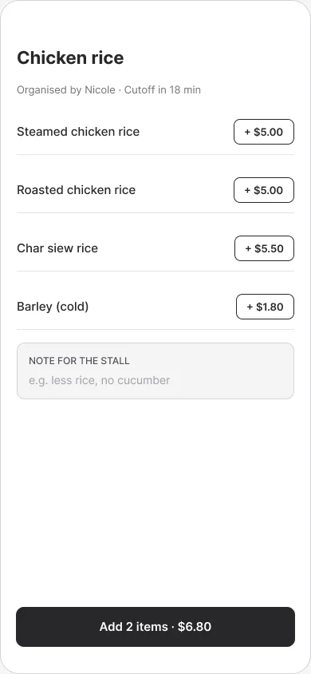
3 · Add my items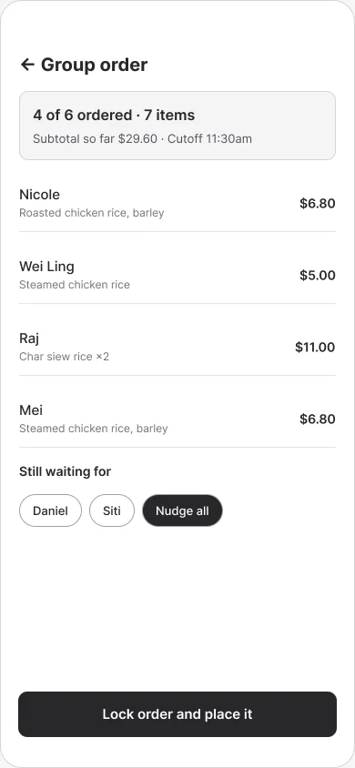
4 · Order summary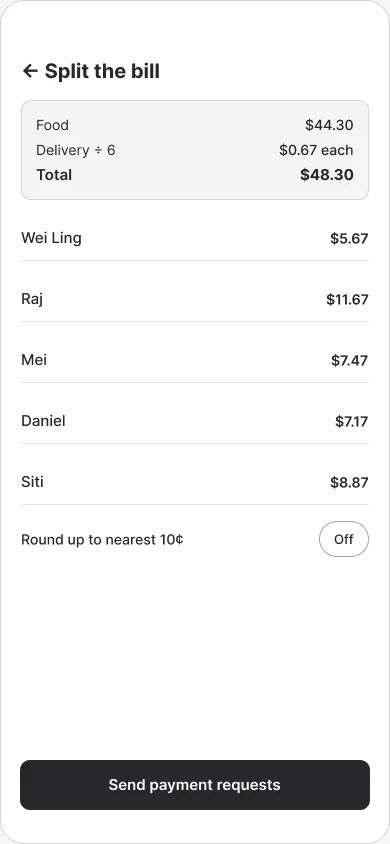
5 · Split the bill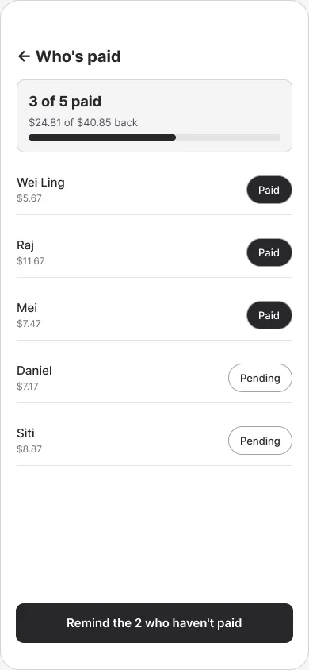
6 · Payment trackerWhy the order summary looks like this
- 1Progress at a glance
“4 of 6 ordered” answers the organiser’s first question without counting messages.
- 2Who’s missing, by name
The people still to order are listed, so nobody is forgotten.
- 3Nudge, don’t chase
One tap reminds everyone missing, so the organiser doesn’t have to message each person.
- 4One clear next step
The only primary action sits at the bottom, in thumb reach.
05 · Local redesign
From a generic teal app to a kopitiam menu.
v1 looked like any delivery app. v2 added kopi colours, PayNow and Singlish, but it was still a standard app with new paint.
For v3 I gathered four references, a kopitiam watercolour, an old menu board, a “starter pack” drawing and a tear-off calendar, and rebuilt the look around them.
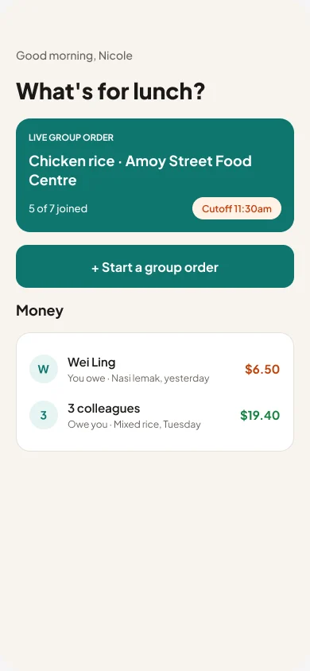
v1 · Teal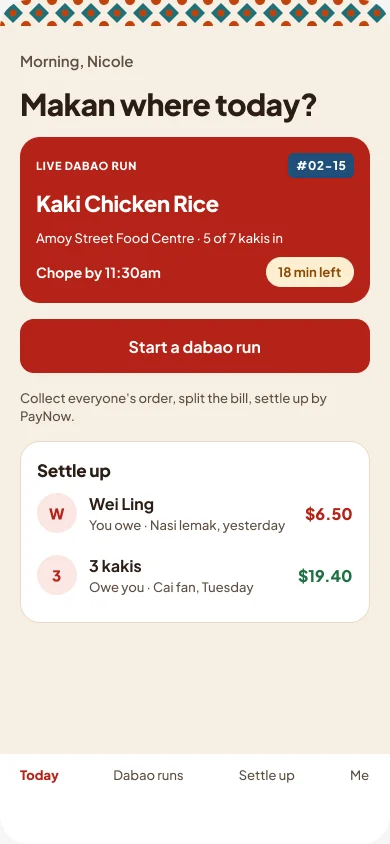
v2 · Kopitiam colours v3 · Kopitiam menu
v3 · Kopitiam menuWhat v3 borrows, and why
- A tear-off calendar for the live run. A run lasts one day with a cut-off, so a calendar page and countdown stamp say “today, until 11:30” at a glance.
- Dotted menu lines. Your eye runs straight from dish to price.
- Stamps for status. Everyone knows a PAID chop, so no legend needed.
- Kaki tiles for progress. Tiles fill in as people pay, so you see who owes without reading a list.
- Stickers and handwritten notes for options, like takeaway tags and the notes colleagues already leave.
06 · English for everyone
I took the Chinese signboards out.
My first v3 draft copied the Chinese signboards from my references. I removed them: an office lunch group is Chinese, Malay, Indian and more, and Chinese-only labels shut some of them out.
The rule: all UI text in English, with Singlish everyone shares: makan, kaki, dabao, chope, lah. Tiles, kopi and hawker culture stay. Every tab has an icon and an English label.
07 · Style variations
Four more skins, one system.
To see how far the system stretches, I tried four more takes on Today. Same layout and 15 components; only fonts, colours and icons change. Each has its own style sheet.
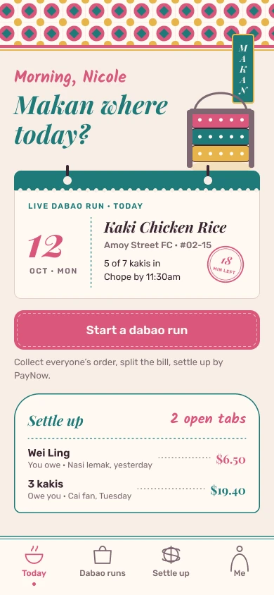
A · Peranakan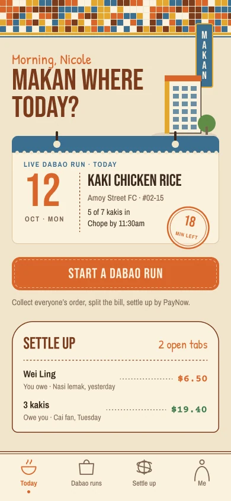
B · Void deck ’80s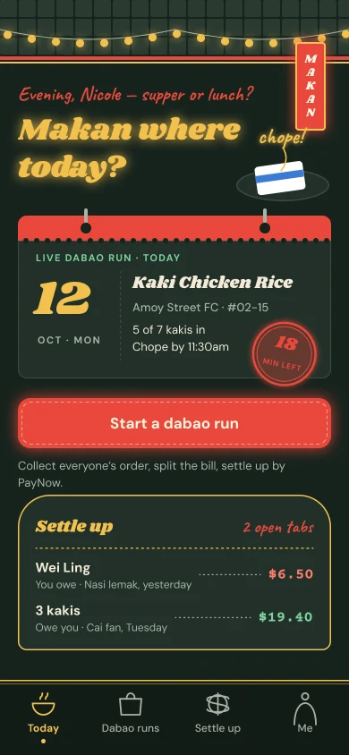
C · Hawker after dark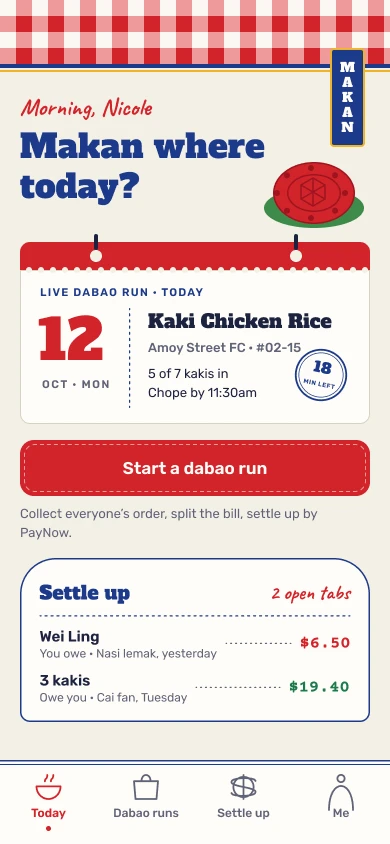
D · Mama shop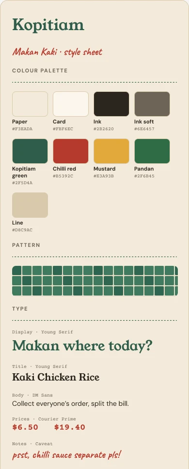
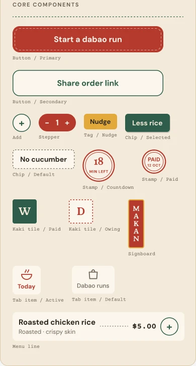
08 · Design log
Every draft, with my reasons.
The Figma file logs every draft: what I asked, what Claude made, and what I decided and why. It shows where my judgement changed the work.
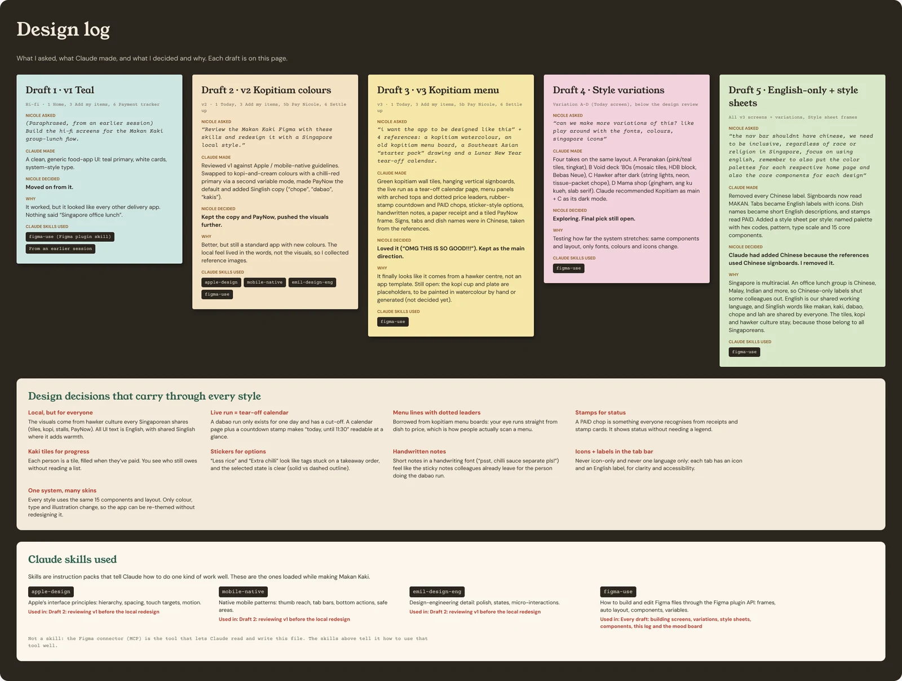
09 · Key screens
The full order, end to end.
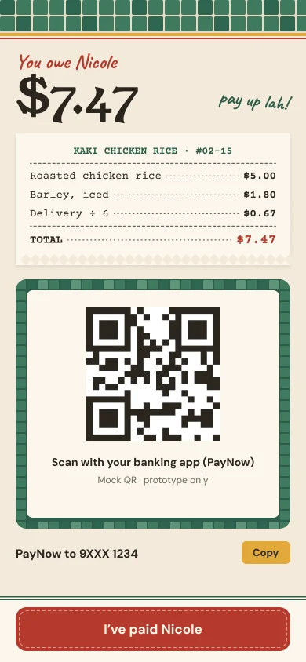
10 · What’s next
Research and testing come next.
Honest status: first-draft screens. No interviews or usability tests yet, and the stall is made up.
Next: interview lunch organisers, test the add-items and settle-up flows, then iterate.
Interview plan
- 5 people who order lunch with colleagues in or near the CBD, at least once a week
- A mix of organisers and people who just order
- Ask about the last real group order, step by step, not what they’d want in an app
What I’ll sort the findings into
- Collecting orders
- Paying and splitting
- Chasing money
- Choosing where to eat
Each insight gets written as: “[Users] struggle to [task] because [reason], so the design will [decision].”
11 · Trade-offs
The calls I made, and what they cost.
The choices that shaped the app most.
Who should the app be built around?
The organiser (chosen)
They do the ordering, front the money and chase payments. Making their job easy is what makes the app worth opening.
Everyone equally (not chosen)
Teammates would get more features, but the add-items flow would get longer for the people who just want to order.
How do people pay the organiser back?
PayNow QR to the organiser (chosen)
Everyone in Singapore already pays friends this way. No wallet sign-up, no money held by the app.
An in-app wallet (not chosen)
Payments could be confirmed automatically, but it adds sign-ups, trust issues and licensing.
What should it look like?
A kopitiam menu, drawn from real references (v3) (chosen)
It belongs in a hawker centre and stands out from delivery apps. Cost: more custom illustration; some art is still placeholder.
Clean, generic teal (v1) (not chosen)
Safe and familiar, but forgettable. It looked like every other food app.
What language goes on signs and tabs?
English, with shared Singlish (chosen)
Everyone in a mixed office lunch group can read it. Costs: less of the old-shop signboard charm from the references.
Chinese signboards, like the references (not chosen)
Authentic to the photos, but it shuts out colleagues who don’t read Chinese.
What worked
- Designing around the organiser kept the colleague flow to three taps: open link, add items, pay.
- Colours as Figma variables made new looks cheap: four extra styles reuse the same 15 components.
What I’d change
- PayNow can’t confirm payments, so the organiser still marks people paid. I want to test whether that annoys people.
- The local style is a guess until real lunch organisers test it.